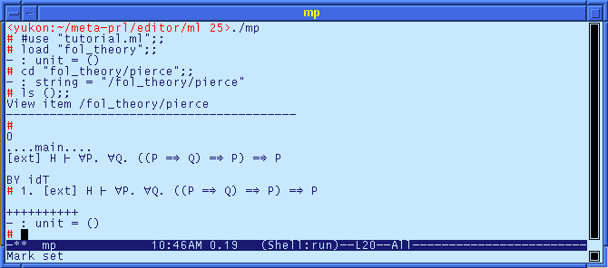
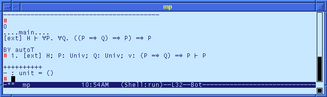
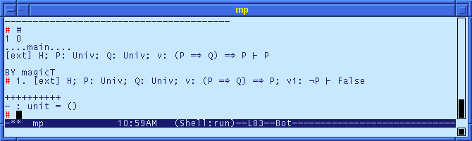
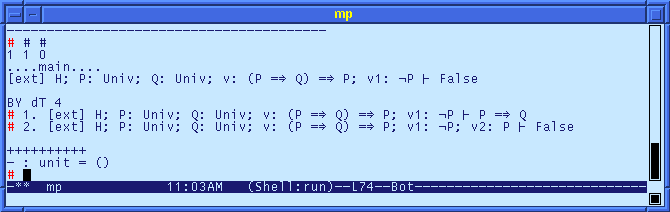
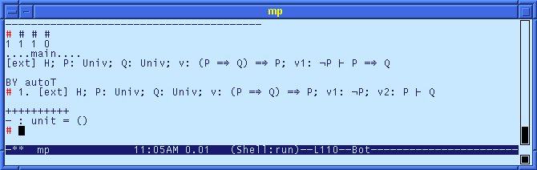
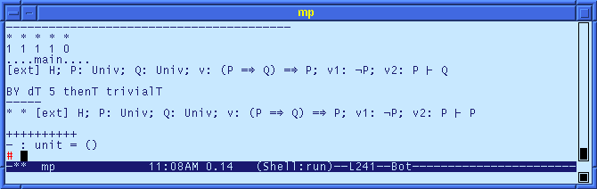

The implementation of the classical logic is now trivial. We include the constructive logic Fol_ctheory and the rule for classical reasoning Fol_class.
The interface include the following lines.
1. Define the classical theory interface in the files fol_theory.mli:
include Fol_ctheory include Fol_class
In the implementation, we also include a theorem of Pierce's law, which we will prove as an example.
2. Define the classical theory in the file fol_theory.ml:
include Fol_ctheory include Fol_class interactive pierce 'H : : sequent ['ext] { 'H >- "all"{P. "all"{Q. ((('P => 'Q) => 'P) => 'P)}} }
To illustrate the classical logic, we prove Pierce's Law, which will require classical reasoning.
3. Compile and view the theory fol_theory.

The initial steps of the proof can be performed with the autoT tactic.

Now, at this step, we have two choices: we can decompose the implication with the dT tactic, or we can "move" P across the turnstile with the magicT tactic. If we decompose the implication, we "lose" the goal, and so the best option is to apply the magicT tactic. Remember to open Fol_class first.

Now we can use the dT tactic on the implication.

The second goal has a trivial proof by applying dT to the negation. For the first goal, we apply dT to the goal.

This last part is proved from the contradiction.
